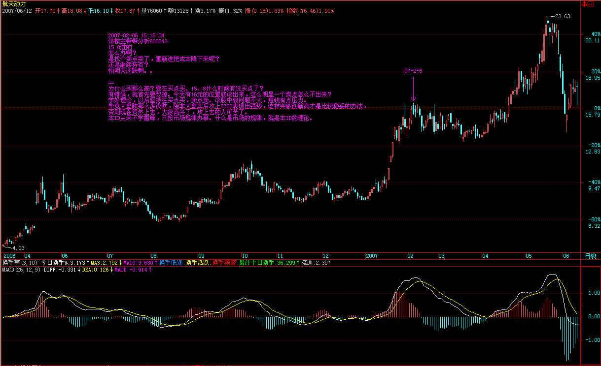
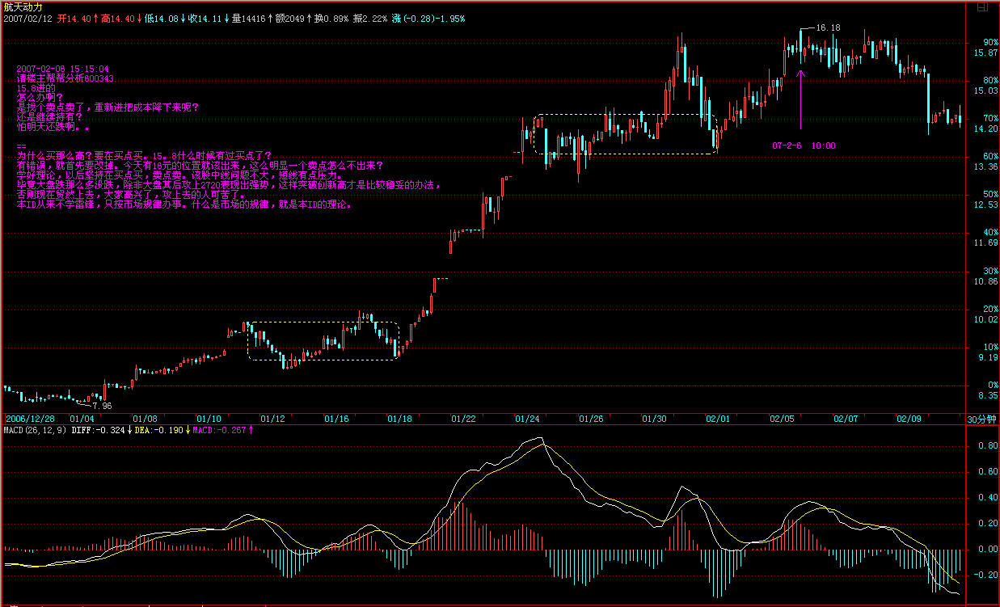
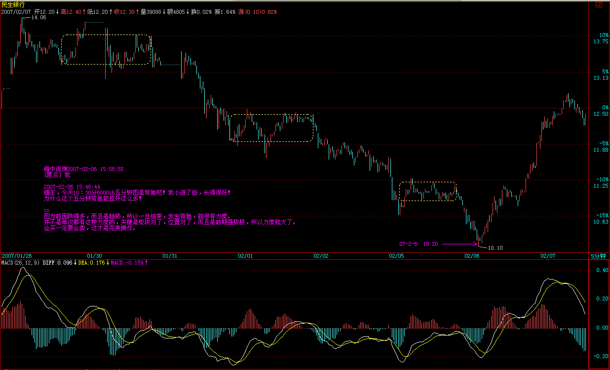
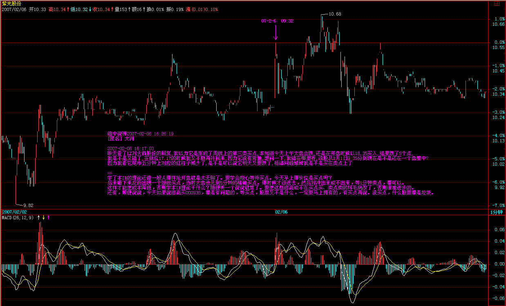
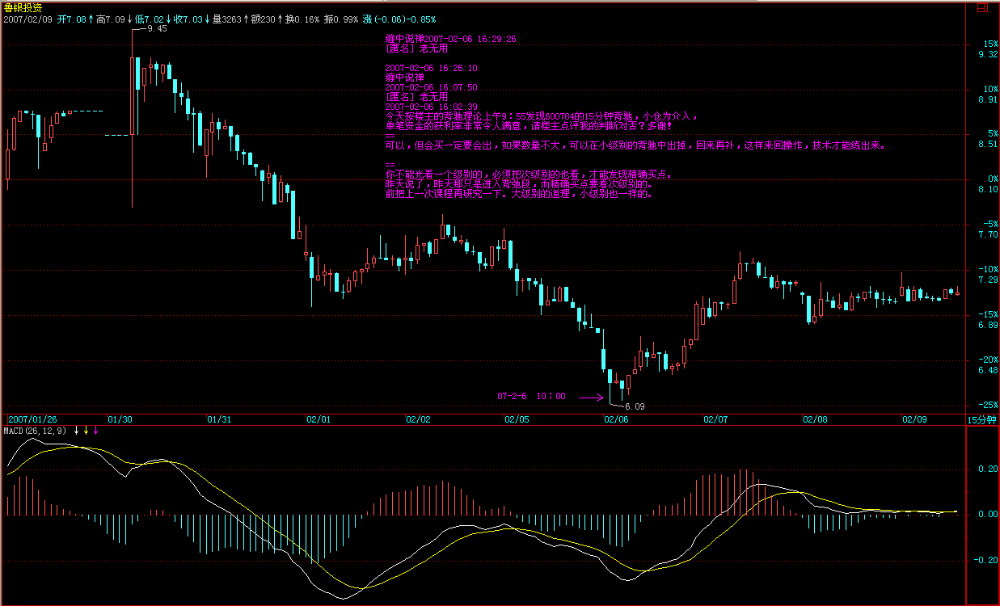
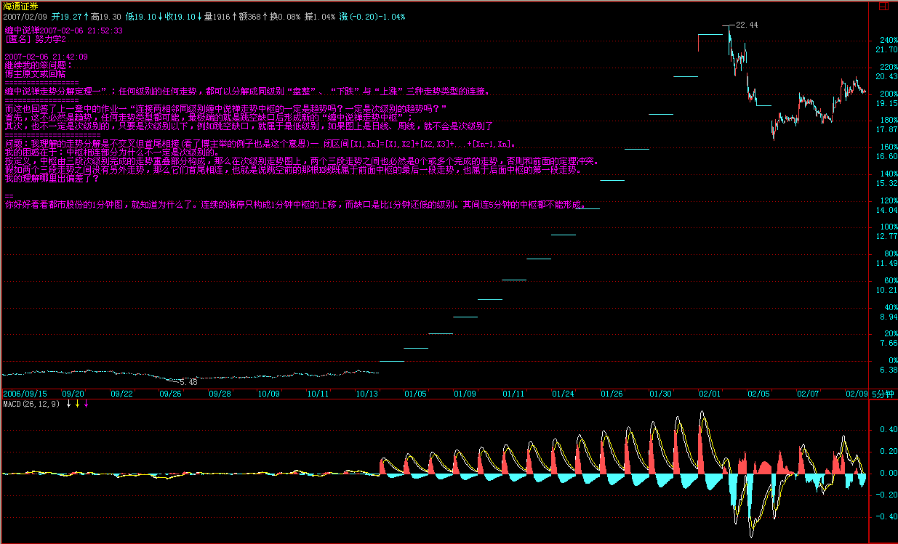
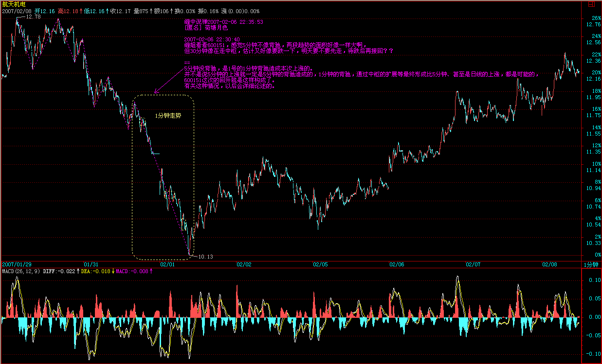
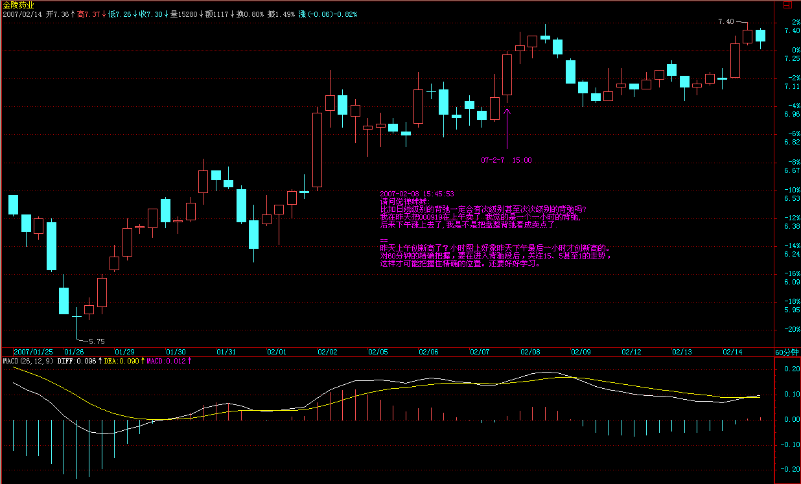
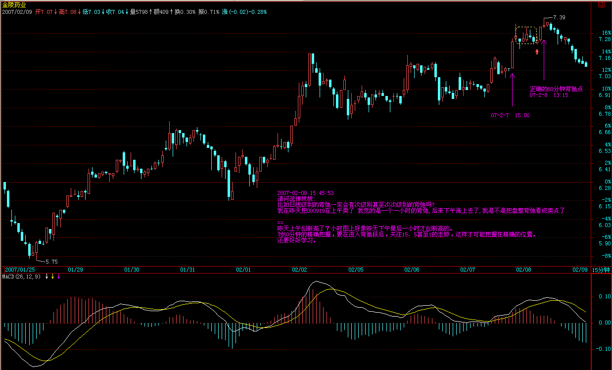

|
 |
教你炒股票28：下一目标：摧毁基金
基金，无论公募还是私募，说白了就是合法传销，本ID从来看不起任何基金，无论公募还是私募。理论上，只要这个合法传销无限延伸下去，那最开始的人肯定要多牛有多牛了。
很多人爱用巴菲特说事，所谓价值投资，其实不过是一种传销手段而已。股票，归根结底就是废纸一张，而其传销本性决定了，股票的所谓价值可以是这样一个完美的圈套，就是在股票所代表的公司上有1元的利润，在股票上就可以产生至少10元的增殖，这，无非就是资产虚拟化中的放大功能。因此，任何一个空壳公司，理论上，只要能合法地发行基金，然后用这传销得到的钱部分地投在该空壳公司的资产上，就可以在股票上赚取10倍以上的增殖。只要有钱，什么优质资产不可以买入注入？只要有钱，什么优质资产不被优先选购？然后，投资这股票的基金就挣钱了，然后新一轮的传销又开始了，如此而已。
任何不承认股票废纸性质的理论，都是荒谬的。任何股票，如果是因为有价值而持有，那都不过是唬人的把戏。长期持有某种股票的唯一理由就是，一个长期的买点出现后，长期的卖点还没到来。站在这个角度，年线图就是最长线的图了，因为任何一个人大概也就能经历70、80根的年K线，一个年线的第一类买点加一个年线的第一类卖点，基本就没了。把握好这两点，比任何价值投资的人都要牛了，那些人，不过是在最多是年线的买点与卖点间上下享受了一番而已。
站在中国股市的现实中，这轮牛市的一个大的调整，必然会出现基金的某种程度的崩溃，上一次的牛市，让证券公司毁了不少，这一次牛市，毁的就是基金。投资的第一要点就是“你手中的钱，一定是能长期稳定地留在股市的，不能有任何的借贷之类的情况”。而基金，不过是所谓合法地借贷了很多钱而已，即使是没有利息的，性质一样。一旦行情严重走坏，基金必然面临巨大的风险，一次大的赎回潮就足以让很多基金永不超生。传销，通常只有一个后果：归零。基金，至少对大多数来说，一样。这是基金一个最大、严重违反投资要点的命门：他的钱都不是他的。对于开放式基金，这点更严重，因为这种赎回是可以随时发生的。而中国的开放式基金就更可怕，中国人的行为趋同性极为可怕，国人一窝蜂去干一件事的后果是什么，大概也见过不少了，无论政治、经济、学术上，无一例外。
由基金这个大命门，派生出一个必然的小命门，就是所谓的基金经理必然要以净值为标准，就像当官的以GDP为标准一样。而基金又有一个当面首还要立牌坊的搞笑规定，一个基金拿某只股票是有一定比例限制的，也就是说，基金在这点上，连庄家都不如，一旦超配，唯一的办法就是找其他基金帮忙拉一把，几家基金一起持有，其实就是联合坐庄，万一都超配了，或者一时各基金都无暇他顾，那就构成了一个很好的阻击机会。站在本ID的立场上，基金就是傻大个，短差又弄不来，又不能随时护盘砸盘，他持有的实际效果，就是让股票的盘子变小了。就算不用一些非市场的手段、一些在中国肯定效果一流的桌底游戏，一次设计合理的阻击足以让这基金，轻的，吃点哑巴亏，重的，让他清盘走人。注意，这市场是开放的，不是本ID心狠手辣，而是只要有命门，必然有人攻击，难道本ID不攻击，这命门就不存在？
和傻大个玩游戏，如果他能熬得住，大不了就弄了一次出色的短差，等于傻大个持有的筹码人间蒸发了一段时期，投资中，唯一重要的其实就是成本，成本比傻大个低，再起来时，傻大个就更危险了，一次搞不死，还不能搞两次、三次，总有搞死的时候。一旦往下搞，基金的净值熬不住，那基金经理就可以走人了，然后，那些筹码就可以信达、东方一番了。如果在一个大级别的，例如月线中枢的调整中，一个集中的攻击，打破一个点，把一个基金公司集中搞跨，所有的基金公司都将面临严重的赎回潮，然后就整个市场都可以严重地信达、东方一番了。吃散户有什么意思呀，基金，就是散户打包，让人一口吃，少麻烦。
最近，一个小的周线中枢震荡，就足以让本ID去试验一下。一个20%都不到的回调，一个就算跌停也就5%的股票，一个基本面面临严重好转的个股，已经让某些人坐不住了。某些傻大个超配了，找人护也没人有空了，看看上周基金的净值，这种局面再维持一周，估计就有人熬不住了。当然，现在的基金还有实力，一棍子肯定打不死的，这次只是闹着玩一次，感觉不错，最次就是权当洗了一次盘，弄了一个出色的短差。本ID可没在这次就把人击倒的想法，12元不行，难道不可以20元才搞死？只要短差出来了，死的一定是没弄短差的人！
本ID对散户可从来都很仁慈的，在高位已经严重提醒了要洗盘了，听不见可不是本ID的问题。现在的股票，并不是每一个都有庄家的，基金成了越来越重要的阻击目标，这个目标是现实存在的，任何道德说教都没用，你不搞，还怕没人搞？至于这个命门如何化解，如何不让这成为外国游资的重大突破目标，那就不可能是水平还在小学的管理层所能明白的。对这种事情，本ID的态度一向很明确，不干白不干，干了白干，本ID只是按着技术提示来，买点买、卖点卖，任何有命门的，都可以产生利润，都可以抽血，为什么不可以玩玩？有罪的不是本ID废了其命门，而是谁让如此的命门来招惹攻击？
市场经济，永远都是血腥的，这一切，都由资本的虚拟化所决定。一个虚拟的资本，就如同僵尸，不吃血，怎么活？对于这一点，必须有清楚的认识。市场打开，就必然要面对各种攻击，如果管理层的智力还达不到攻击者的千分之一，那只有瞎闹的份。下一个死的，一定是基金，在一个月线级别的调整中，这一幕必然上演，现在唯一有疑问的是，不会连一个周线级别的调整，都会有好戏提前上演吧？这个可能性是不大的，如果真出现，这基金也弱了。对于这么弱的对手，本ID是没兴趣了，对手越强越好玩。
投资，就当独行客，所有事情都自己去承担。而本ID的理论，是一个客观的描述，和任何的主观分析无关，就如同阳光、空气，不管你是否认识，都存在着。不理解这一点，那是不可能明白本ID的理论的。
每日解盘（2007-02-07 20:43:08 )
教你炒股票28:回复(一)
缠中说禅：
2007-02-06
15:16:44
[匿名] abc
缠中说禅：2007-02-06 15:22:24
[匿名] 曦月 2007-02-06 15:15:04
请楼主帮帮分析600343
15.8进的
怎么办啊？
是找个卖点卖了，重新进把成本降下来呢？
还是继续持有？
怕明天还跌啊。。
========
为什么买那么高？要在买点买。15.8什么时候有过买点了？有错误，就首先要改掉。今天有16元的位置就该出来，这么明显一个卖点怎么不出来？学好理论，以后坚持在买点买，卖点卖。该股中线问题不大，短线有点压力。毕竟大盘跌那么多没跌，除非大盘其后攻上2720表现出强势，这样突破创新高才是比较稳妥的办法，否则现在贸然上去，大家高兴了，攻上去的人可苦了。本ID从来不学雷锋，只按市场规律办事。什么是市场的规律，就是本ID的理论。

 缠中说禅：
2007-02-06
15:24:36
[匿名] 摄影之友
缠中说禅：
2007-02-06
15:28:04
[匿名] 听缠说禅 =========================== [匿名] 老无用 你的图形是复权的？不要复权。对超长线，更没必要复权。短线有点必要，毕竟突然的缺口，使得一些指标有变化。但也只限于除权后的一定时间内。如果熟练，根本没必要复权。
缠中说禅：
2007-02-06
15:36:17
[匿名] 三藏 ＝＝＝ [匿名] 并不完美 [匿名] 下下
缠中说禅：
2007-02-06
15:58:55
[匿名] 我 
缠中说禅：
2007-02-06
16:07:50
[匿名] 老无用
缠中说禅：
2007-02-06 16:10:59
[匿名] 悠悠悠哉
缠中说禅：
2007-02-06
16:13:13
[匿名] 木香珠
缠中说禅：
2007-02-06
16:15:11
[匿名] 学生古代 [匿名] 大河 
缠中说禅：
2007-02-06
16:29:26
[匿名] 老无用 --------
谢楼主点评。我的疑问是为什么昨日下午也发生黄白线不创新低，股价创新低，也形成了两个下跌中枢，却不是背驰？
==
你不能光看一个级别的，必须把次级别的也看，才能发现精确买点。昨天说了，昨天那只是进入背弛段，而精确买点要看次级别的。前把上一次课程再研究一下。大级别的道理，小级别也一样的。

缠中说禅：
2007-02-06
16:35:33
[匿名] 小鸟
缠中说禅：
2007-02-06
16:40:04
[匿名] 后知后觉 [匿名] 听缠说禅 [匿名] 清 [匿名] 酿酒制药 [匿名] 淡定 [匿名] 努力学2 ================ =============== 跳空的级别是无限低的，不构成任何中枢中的一段。这和分解定理没有什么矛盾的。上涨、下跌都是完成了的走势类型，是比中枢以及连接中枢的要大的概念，不要搞混了。走势类型的级别只与其中包含的中枢有关。例如，包含一个日线中枢的走势类型，那一定是日线级别的盘整，包含两个以上日线中枢的，那一定是日线级别的趋势。这和连接中枢的走势级别无关。

教你炒股票28：回复(二）
2007-02-06 22:35:53
[匿名] 荷塘月色 
缠中说禅：
2007-02-06 22:38:54
[匿名] 不在潜水
缠中说禅：
2007-02-06
22:43:57
例如，今天大盘5分钟的背驰制造出一个5分钟的三段走势来，也就是说，这个反弹就此结束，在理论上也是成立的。因为已经达到5分钟背驰所能制造的最低级别走势要求。那么，其后反弹的继续依靠什么？就不是背驰的力量了，要靠中枢的延伸与扩展等手段。
缠中说禅：
2007-02-06
22:46:58
[匿名] 中间体
缠中说缠：
2007-02-07 17:21:33
问题1：这里的高低点有量化的概念吗？我就老在学习中把“不明显”的看成“明显”的，从而发生误判。记得前面也有同学问什么程度算高低点，不过后面没有答案，所以我也没搞明白。
缠中说禅：
2007-02-07 21:25:57
[匿名] 拜读者
缠中说禅：
2007-02-07 21:33:46
[匿名] 诚诚
缠中说禅：
2007-02-07 21:44:54
[匿名] 白玉兰
缠中说禅：
2007-02-07 21:54:03
对不起，本ID要下了。
缠中说禅：
2007-02-08 15:17:55
有人将本ID所搞的详细列了出来，这样也好，本ID的怎么样，阻击点都是根据本ID的理论来的，回头一看，有目共睹。
缠中说禅：
2007-02-08 15:20:51
[匿名] 小明
缠中说禅：
2007-02-08
15:35:00
[匿名] 呼呼
缠中说禅：
2007-02-08
15:36:55
[匿名] 中间体
缠中说禅：
2007-02-08 15:47:17
[匿名] 满目山河 缠中说禅：
2007-02-08 15:51:31
[匿名] 小牛 
 缠中说禅：
2007-02-08
16:03:48
[匿名] 铁弹子
缠中说禅：
2007-02-08
16:05:15
[匿名] 外科医生
缠中说禅：
2007-02-08 16:31:37
[匿名] 中间体 ====================================
缠中说禅：
2007-02-08
16:36:39
[匿名] 巴索林
缠中说禅：
2007-02-08
16:41:12
[匿名] 清
|
|
|
|